Consultazione cataloghi
Il portale delle Smart Guide è uno spazio digitale che raccoglie risorse pratiche e aggiornate in un unico ambiente intuitivo. Strumenti chiari e organizzati per organizzarti e trovare subito ciò che ti serve.
01.
Consultazione cataloghi
Una panoramica sulla ricerca e consultazione dei cataloghi.
Punto di accesso
La voce di menù
Dalla dashboard, è possibile accedere alle principali sezioni tramite le voci di menu.
Menu a tendina
Cliccando sulla voce "Consultazione cataloghi" sarà possibile accedere direttamente alla pagina dedicata.
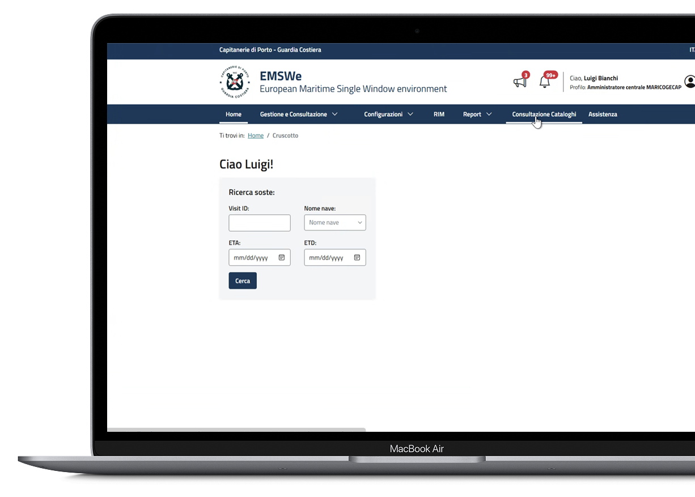
Ricerca cataloghi
In questa pagina è possibile ricercare e visualizzare tutti i cataloghi disponibili a sistema.
Consultazione cataloghi
In questa pagina l'utente può selezionare il tipo di catalogo che vuole consultare. Dopo aver selezionato il catalogo verrà presentata la sezione filtri contestuale al catalogo selezionato che consente di ricercare i cataloghi utilizzando diversi criteri.
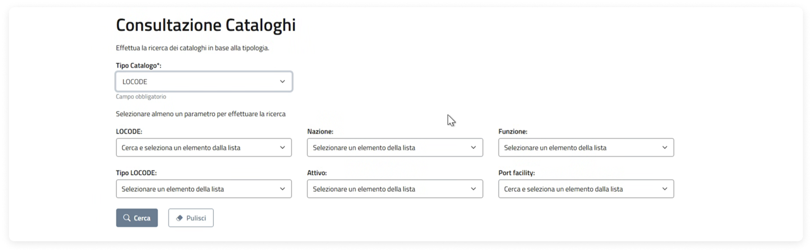
Ricerca
Catalogo LOCODE
È possibile avviare la ricerca utilizzando i filtri disponibili. La schermata è suddivisa nelle seguenti sezioni:
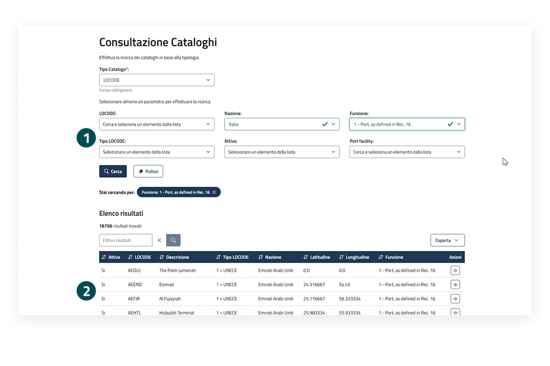
Sezione filtri
Per avviare la ricerca è necessario inserire almeno uno dei parametri disponibili, tra cui LOCODE, Nazione, Funzione, Attivo e Port facility, e successivamente cliccare sul pulsante "Cerca".
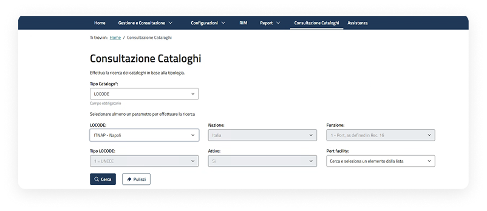
Visualizzazione richiesta tramite tabella
I risultati della ricerca vengono presentati in una tabella, mostrando le informazioni principali e le azioni disponibili.
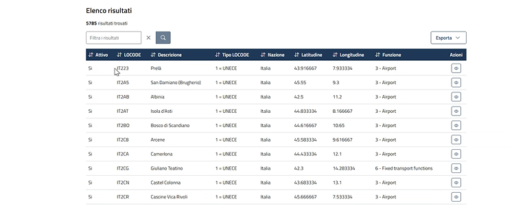
Inserendo un valore all'interno del campo "LOCODE", il sistema pre-valorizza in automatico tutti i campi presenti nella ricerca al netto del campo "port facility", il cui elenco deve essere pre-filtrato nel caso in cui il LOCODE selezionato abbia funzione "1 - Port, as defined in Rec 16".
Consultazione cataloghi
Visualizzazione dettaglio catalogo LOCODE
All'interno della pagina sono consultabili le seguenti informazioni:
- LOCODE
- Nome con segni diacritici
- Nome senza segni diacritici
- Attivo
- Tipo LOCODE
- Nazione
- Latitudine
- Longitudine
- Funzione
- Elenco port-facility
- Informazioni aggiuntive
Possibili azioni sulla visualizzazione del dettaglio del catalogo CODICI WASTE
Indietro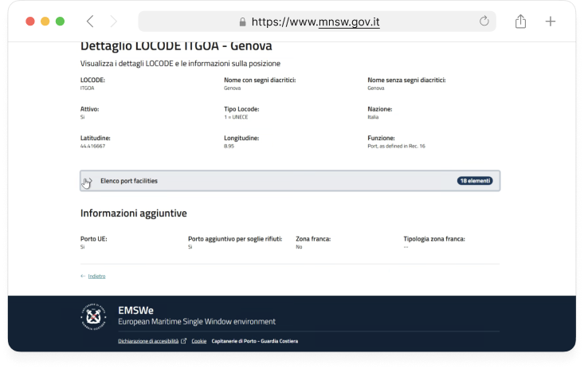
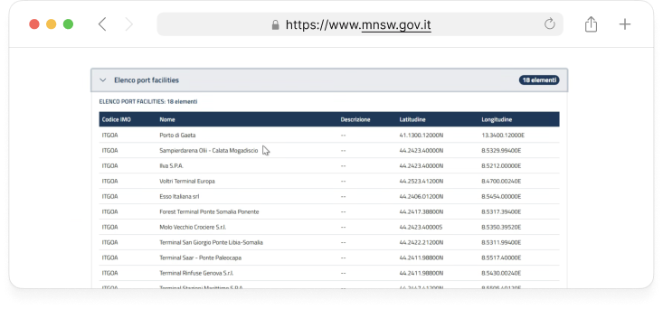
Ricerca
Catalogo CODICI WASTE
È possibile avviare la ricerca utilizzando i filtri disponibili. La schermata è suddivisa nelle seguenti sezioni:
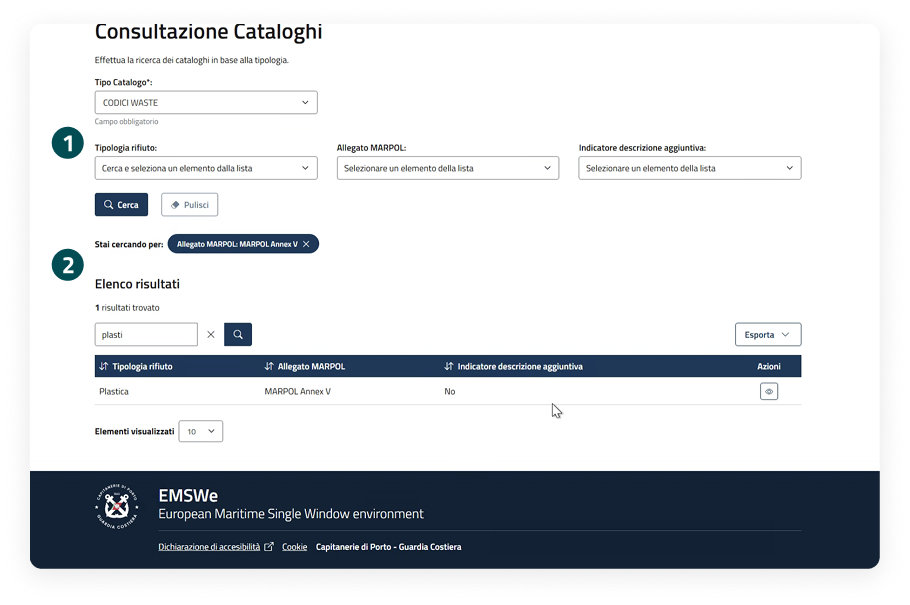
Sezione filtri
Per avviare la ricerca è necessario inserire almeno uno dei parametri disponibili, tra cui Tipologia rifiuto, Allegato MARPOL, Indicatore descrizione aggiuntiva e successivamente cliccare sul pulsante "Cerca".
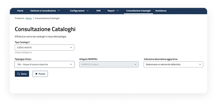
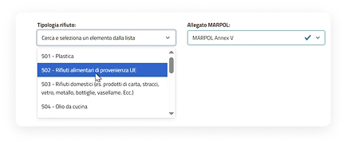
Inserendo un valore all'interno del campo "Tipologia Rifiuti", il sistema pre-valorizza in automatico il campo "Allegato MARPOL"; inserendo un valore all'interno del campo "Allegato MARPOL", il sistema pre-filtra in automatico gli elenchi per il campo "Tipologia rifiuto".
Visualizzazione richiesta tramite tabella
I risultati della ricerca vengono presentati in una tabella, mostrando le informazioni principali e le azioni disponibili.
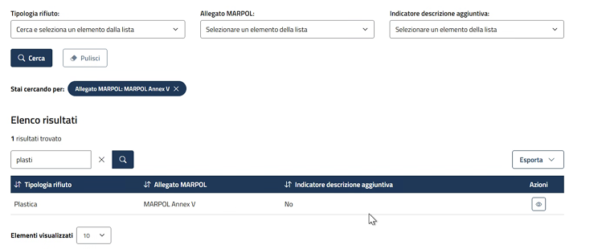
Consultazione cataloghi
Visualizzazione dettaglio catalogo CODICI WASTE
All'interno della pagina sono consultabili le seguenti informazioni:
- Data di creazione
- Tipologia di rifiuto
- Allegato MARPOL
- Indicatore descrizione aggiuntiva
Possibili azioni sulla visualizzazione del dettaglio del catalogo CODICI WASTE
Indietro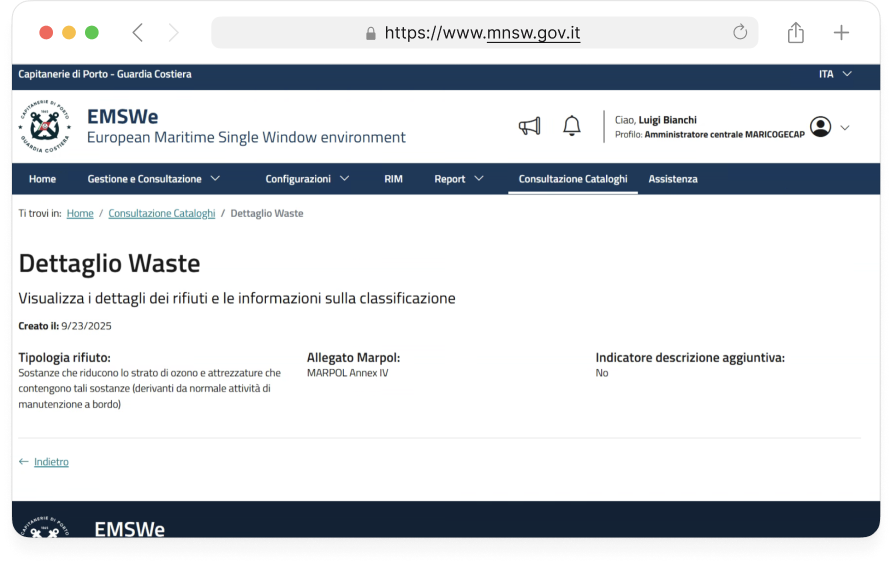
Ricerca
Catalogo IMDG CODE
È possibile avviare la ricerca utilizzando i filtri disponibili. La schermata è suddivisa nelle seguenti sezioni:
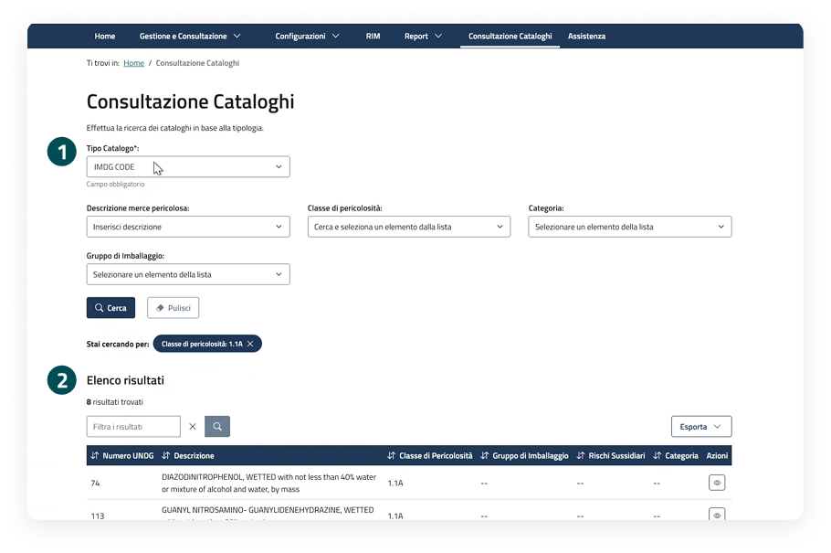
Sezione filtri
Per avviare la ricerca è necessario inserire almeno uno dei parametri disponibili, tra cui Descrizione merce pericolosa, Classe di pericolosità, Categoria, Gruppo di imballaggio e successivamente cliccare sul pulsante "Cerca".
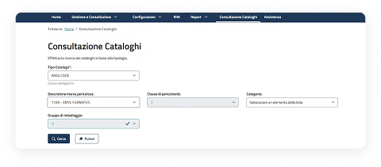
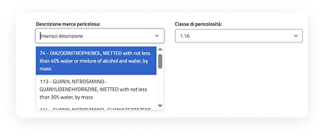
Inserendo un valore all'interno del campo "Descrizione merce pericolosa", il sistema pre-valorizza in automatico i campi presenti nella ricerca; inserendo un valore all'interno del campo "Classe di pericolosità", il sistema pre-filtra in automatico gli altri campi presenti nella ricerca.
Visualizzazione richiesta tramite tabella
I risultati della ricerca vengono presentati in una tabella, mostrando le informazioni principali e le azioni disponibili.
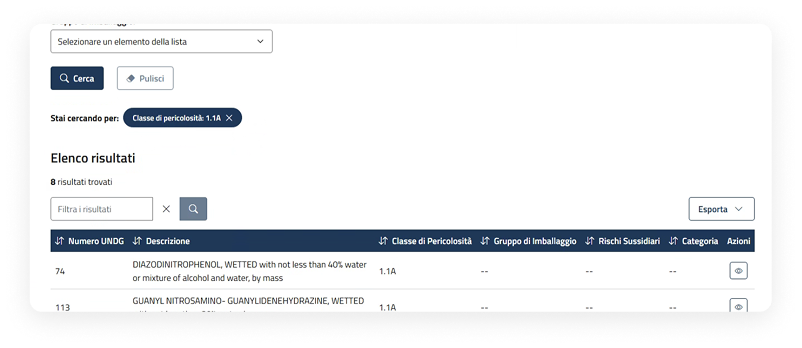
Consultazione cataloghi
Visualizzazione dettaglio catalogo IMDG CODE
All'interno della pagina sono consultabili le seguenti informazioni:
- Data di creazione
- Ultimo aggiornamento
- Denominazione
- Numero UNDG
- Gruppo di imballaggio
- Classe di pericolosità
- Rischi sussidiari
- Tipo di prodotto
- Tipo di inquinamento marino
- Numero EmS
- Punto di infiammabilità
- Modalità di trasporto
- Tipo di liquido
- Tipo di edizione
- Informazioni aggiuntive
Possibili azioni sulla visualizzazione del dettaglio del catalogo CODICI WASTE
Indietro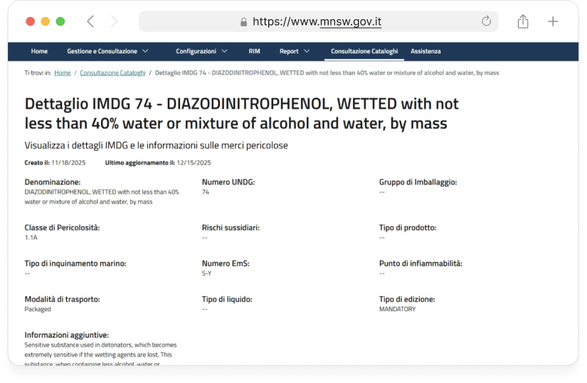
Consultazione cataloghi
Tipologie di catalogo
Sulla base di quanto illustrato nei precedenti cataloghi è possibile ricercare e consultare in maniera complessiva tutte le tipologie di catalogo merci presenti a sistema.
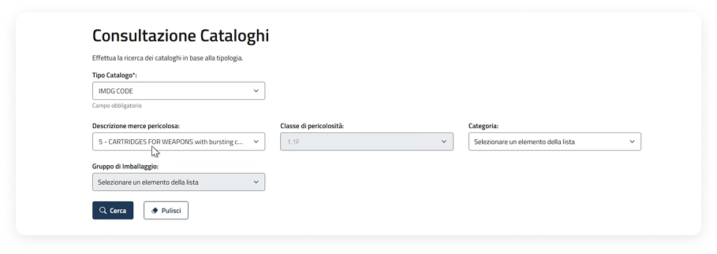
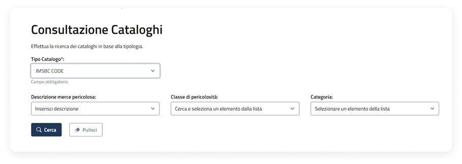
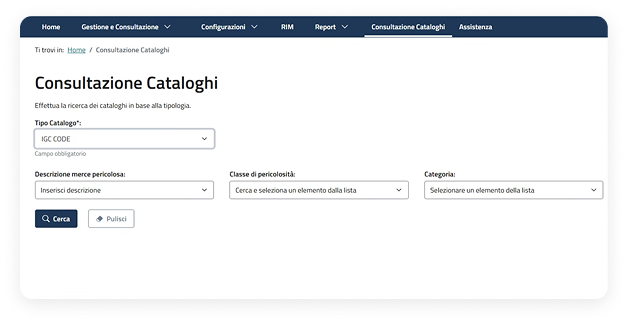
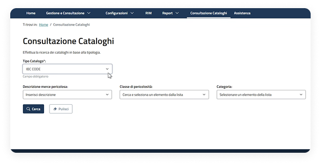
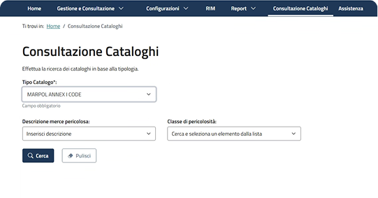
Funzionalità configurazioni
Ricerca, esporta e paginazione
Ricerca
Al click sulla barra di ricerca sarà possibile inserire un testo da cercare e avviare la ricerca premendo il pulsante "Cerca".
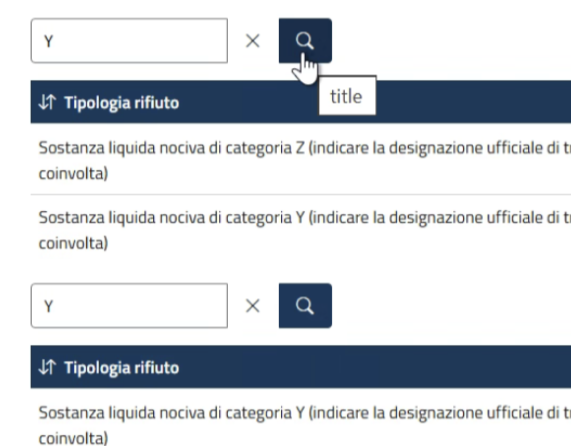
Esporta
Al click sul pulsante "Esporta" sarà possibile esportare tutte le configurazioni attive in PDF o XLS.
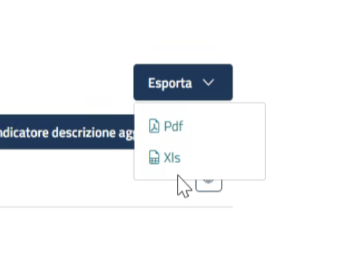
Paginazione
Facendo click su "Elementi visualizzati" si aprirà un menu a tendina che permetterà di selezionare quanti elementi mostrare nella pagina, da 10 a 100.
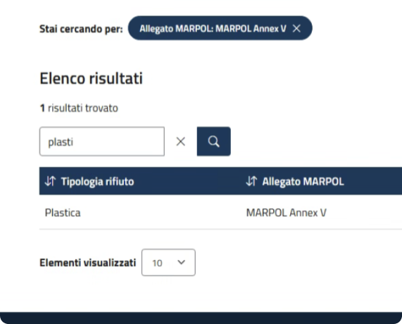